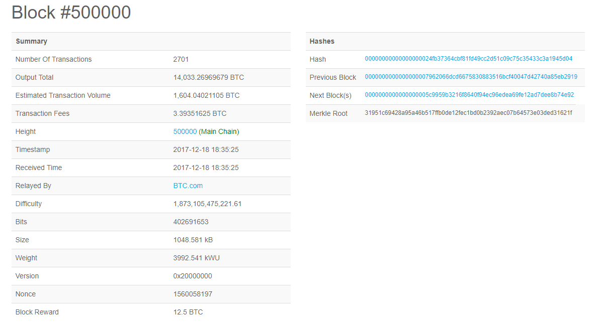
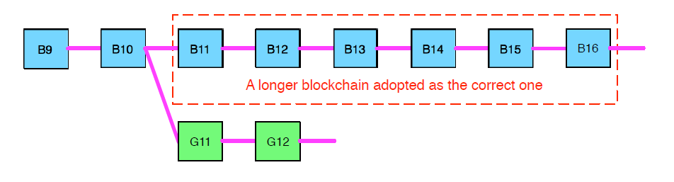

Bitcoin is a decentralized online currency known as a cryptocurrency. Bitcoin was originally developed by an individual or individuals going under the pseudonym Satoshi Nakamoto. Bitcoin was developed with the idea that there should be an easier way to facilitate peer-to-peer transactions online without having to rely on a third party money manager such as PayPal. Nakamoto defines a singular Bitcoin as a "chain of digital signatures" [3]. Using public/private key cryptography an owner of a Bitcoin can initiate a transaction using a public key and then sign the transaction as valid, transferring ownership to the new owner via their public key. The results of these signatures and transactions are publicly available and accessible in a cryptographically secure storage medium called a block chain.
Bitcoin is not a fiat currency, it is not backed by any banks or governments. Any vendor can choose to deal in Bitcoin (or other cryptocurrencies) only if they choose to.
A block chain is a data structure built on cryptographic hashes. A basic cryptocurrency blockchain contains four discrete structures:
Each block in the chain contains the block hash of the block that came before it, somewhat like a linked list. This hash forms the "chain" of the blockchain. From any block N, it is possible to trace back through the hashed value of the blocks until reaching the very first block of the chain, the genesis block. [4]
Thus, if a blockchain was 10 blocks long, and someone attempted to make a change at block 4, it would cause all of the hashes past block 4 to be invalid and the change would likely be rejected. Blockchains of sufficient length are secure in that it is difficult and very unlikely to find the "correct" cryptographic hash of a block. Bitcoin, for example, requires a certain number of leading zeroes at the beginning of a prospective block's hash. Given that the output of a hash function is nearly impossible to predict, the attacker of the blockchain would have to then generate "correct" hashes for all blocks that came after block 4 all the way until block 10. This "new" altered blockchain would then have to be accepted by the Bitcoin network. [3][4]
The block hashes for Bitcoin are generated by combining the Nonce and the Merkle Root Hash of the list of transactions. The Merkle Root Hash is generated via a binary tree structure, with the bottom leaves being the actual plaintext of the transactions themselves, with all of the leaves above them being the hash generated by each of their edge nodes. The nonce is simply a 32-bit number that is iterated by one and combined with the Merkle Root hash into the SHA-256 hashing algorithm. The intent is the combination of these two generating a hash with the correct amount of leading zeroes to be a valid hash for the Bitcoin network.
The timestamp is a timestamp. Bitcoin includes other information in its blocks, but that is not particularly important for this discussion.
Bitcoin operates on a P2P network schema. Due to the decentralized nature of the cryptocurrency, all nodes are considered equal. [4] There is no "bank of Bitcoin" or otherwise node that is more important than the rest. A prospective node in the network can download Bitcoin P2P software such as BitcoinCore and begin downloading a local copy of the recent blocks in the blockchain. [5] To begin the process of getting connected, the software will contact a specific few web addresses that will return the list of currently active peers on the network. This web address (of the node) is typically called the seed node. [5] If the IP address of one node in the network is known, the client can connect directly to it and be introduced to the through that node instead of having to go through the DNS seed nodes. [1] From the seed or IP the Bitcoin client software connects to the other nodes across port 8333 and verify that they are using the correct revision of the Bitcoin protocol (the current version is 0x20000). [1][2] Once a list of peers is established, the software chooses some nearby nodes to connect to, joining the collective network. When the client is successfully connected to the Bitcoin network, it listens for transactions. Transactions are broadcast to the entire network at once. [4]
A few things happen when a transaction is received via TCPIP to the node.
This system of validation and broadcasting ensures that real transactions retain any time in the network. It also prevents transactions being looped around in the network in a packet storm (which could effectively bring the entire network down).[4] This process does add a bit of latency to the process of transaction propagation across the network. One big problem that Nakamoto realized with the potential of a network like blockchain is the risk of double-spending. [3] If one node recieves transaction A containing a transaction of Bitcoin Y, and another node receives a transaction B of Bitcoin Y, the coin is technically spent twice. This is dealt with in the validation process. Since both transactions at the moment they were broadcast to the network were valid, it creates a race condition for both transactions to be added to a successful block in the chain. Once one of the transactions is added successfully to a block and the block is accepted by the network, the other transaction is discarded by all of the nodes. [1]
Transactions occur between individuals via private/public key cryptography. The private key signing is the "chain of signatures" that Nakamoto wrote about in the Bitcoin white paper.[3] Every individual who is part of the Bitcoin network generates their own private key, and use their private key to generate a Base58 public key that is used as an address to send or receive Bitcoin. When a transaction occurs, the public key of the recipient is used as the destination address. The blockchain is searched for the last instance that the sender received that Bitcoin, and the private key of the sender is used to "hand off" the coin to the destination address. Once the Bitcoin is signed out of the original holder, the receiver signs the Bitcoin with their private key. [3][4] It is important to note that not all transactions use one entire Bitcoin per transaction. In fact, many transactions occur using fractions of Bitcoin, sometimes as low as 0.000001 Bitcoin. All transactions, even the small ones, are recorded in the transaction ledger. [2]
Typically the public keys generated for these transactions are for single use transactions and are destroyed after each use by the user to retain anonymity. [1] However some institutions such as vendors or famous individuals have utilized the same public keys (sometimes spending a lot of computational power randomly hashing until they get a "vanity" address containing a particular string [4]) many times as a public identity. It is not best practice to utilize the same public key repeatedly. It is possible that someone could accidentally (or purposefully) generate a visually similar address to defraud the vanity key user by posting the fake address online alongside the identity of the user, thus causing confusion.
Bitcoin mining is the process in which nodes in the network create valid transaction ledgers and build their own blocks for the network. Building blocks in the Bitcoin network requires a few things in order to be considered valid. The first is the need for the correct cryptographic hash which was discussed before. The SHA-256 algorithm will output a string of 64 characters that are essentially random. The goal of the miner is to find the correct hash with at least the minimum amount of leading zeroes such that it falls below the current difficulty number [1]. The hash of a block is comprised of two pieces that are input into SHA-256. The first is the cryptographic nonce, simply a 32-bit number. The second is the Merkle root hash, which itself is a hash of all the transactions in the prospective block. There is one wrinkle to the Merkle root in that it contains its own nonce in the very first transaction in the chain: the coinbase. The coinbase transaction is the reward that miners are allowed to give themselves a predetermined amount of Bitcoin for successfully creating a block. The coinbase nonce is a 32-bit number, each changing the Merkle root hash to a unique value. This means that there are a very large potential set of inputs to SHA-256 that are used to find the correct hash.
Once a miner node finds a correct block, this block is broadcast to the entire network -- but it may not be accepted quite yet. A valid block can be broadcast and not accepted. Valid blocks are added on a probationary basis, while more blocks are added on top of them. Once a particular chain has reached a multiple of six, the chain of six are considered concrete and formally added to the chain by the network.[4] What this means is that there can be different forks of the blockchain going all at once, each containing different transactions, but if any overlap occurs between the blocks then they obviously cannot be added to the same chain. If a new valid chain is accepted, all of the forks (with their "valid") blocks are abandoned in favor of the longer chain. 
Bitcoin miners are incentivised to mine because of the coinbase transaction. Shown here in block #500000, the coinbase transaction allowed the miner to allocate roughly 16 Bitcoin to themselves.

The rewards for creating a block are finite, and halve every 210,000 blocks until eventually the block reward is essentially zero. The miners are incentivised to keep mining because on top of the block reward, each Bitcoin transaction also incurs a small transaction fee. [4] The block reward for block #500000 was actually 12.5 BTC, but the transaction fees added the total up to nearly 16 BTC. [2] This system of transaction fees ensures that even when the block reward is relatively microscopic, miners will be able to reap the rewards of creating valid blocks to keep the Bitcoin blockchain alive.
It is worth noting that due to the exponentially large amount of potential values that must be input into the SHA-256 algorithm that it is unlikely that a single person using their home computer could mine successfully. Often times miners create large mining pools where a large collective of computers are combined and the rewards of block creation and validation are shared amongst all of the members of the pool.
Since Bitcoin acquisition is tied to public and private key cryptography, storage of acquired Bitcoins is a relatively simple affair. It is possible to store Bitcoin on paper by simply writing down your private key. There are also wallet services online that will retain your private key for safe keeping. There also exist certain "hardware" wallets of essentially hardened non-flash USB drives that will keep the private key information safe.
The simplicity also comes at a cost. If a private key is lost or stolen, all of the Bitcoin associated with that particular private key is lost as well. There is no Bank of Bitcoin to go to cry foul -- it is the user's own mistakes that can cost them their Bitcoin.